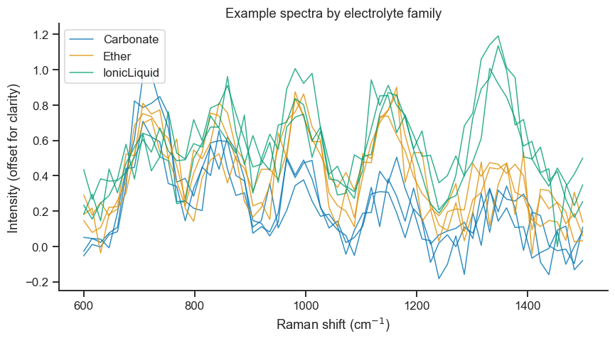
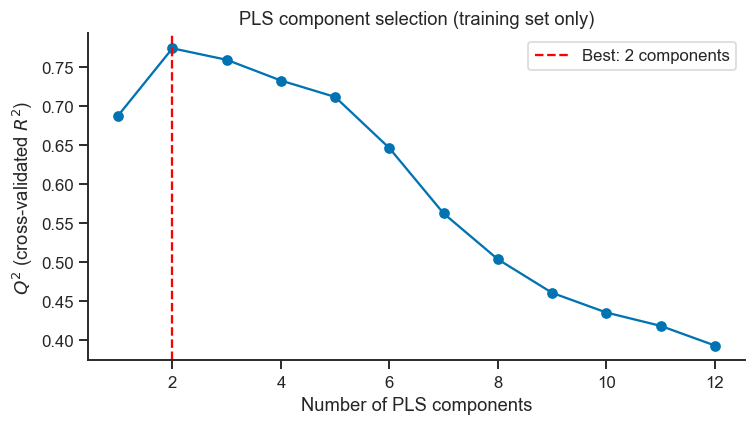
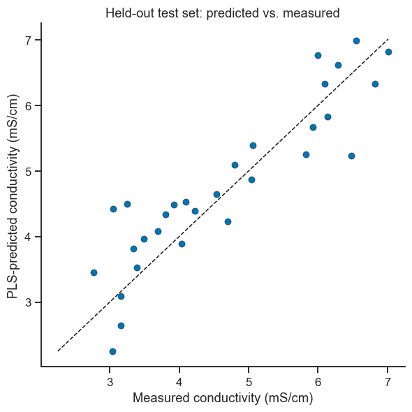
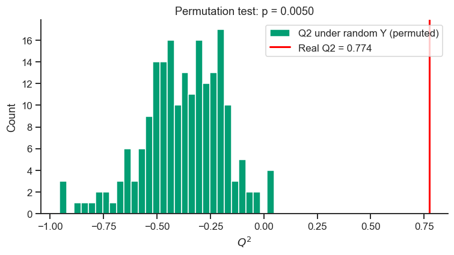
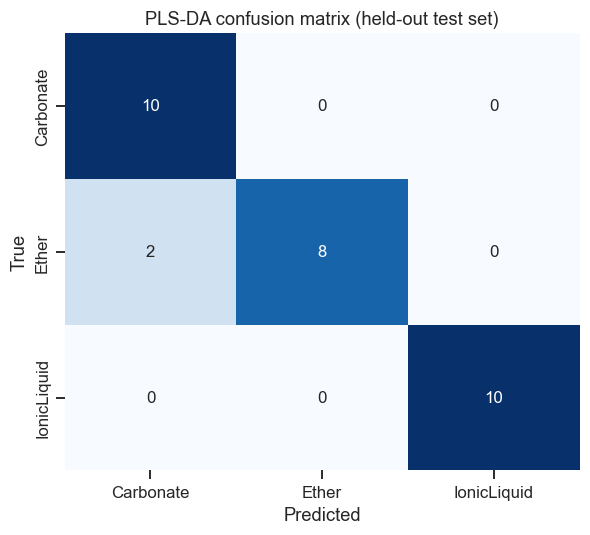
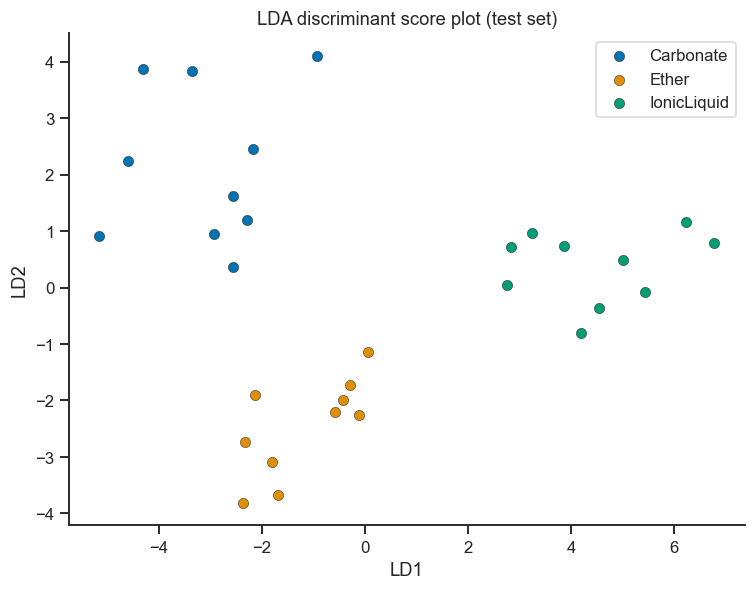

17. Live Tutorial 2: PLS/PCR & LDA — Supervised Modelling of Electrolyte Spectra#
Last session’s tools (PCA, Factor Analysis) find structure in a set of variables X alone — nothing about the analysis knows or cares what you plan to predict. This session is about the moment you do have a target: either a continuous property (ionic conductivity — PLS/PCR) or a category (which electrolyte family a sample belongs to — PLS-DA/LDA). The running dataset is simulated Raman spectra of Li-ion electrolyte formulations — one spectrum (many correlated wavenumber channels) per sample, exactly the kind of high-dimensional, collinear data PLS was invented for.
This notebook is designed to be read straight after Notebook 16 (Live Tutorial 1) — Section 17.5 reuses that session’s PCA scores directly.
Session plan
Recap: unsupervised (last session) vs. supervised (this session)
The dataset: 120 simulated electrolyte Raman spectra
PLS and PCR: predicting ionic conductivity from a whole spectrum
Is the model actually better than chance? A permutation test
PLS-DA: classifying electrolyte family from a spectrum
LDA: the same classification problem, a different route in
PLS-DA vs. LDA — when to reach for which
import numpy as np
import pandas as pd
import matplotlib.pyplot as plt
import seaborn as sns
sns.set_theme(style='ticks', palette='colorblind')
plt.rcParams.update({'figure.dpi': 110, 'font.size': 11})
rng = np.random.default_rng(7)
17.1 Unsupervised vs. Supervised, in One Sentence#
Every method in Notebook 16 asked “what structure exists in X?” with no target variable in sight. Every method in this notebook asks “how do I use X to predict Y?” — a continuous Y for PLS/PCR, a categorical Y for PLS-DA/LDA. Same family of linear-algebra tools (projections onto a small number of components), fundamentally different objective driving which components get chosen — Section 17.5 makes that contrast concrete.
17.2 The Dataset: Simulated Electrolyte Raman Spectra#
120 Li-ion electrolyte formulations across three families —
Carbonate-based, Ether-based, and Ionic-Liquid-based — each with a
simulated Raman spectrum over 60 channels (600–1500 cm⁻¹, arbitrary
intensity units) built from 5 latent spectral bands, following the same
“latent profiles + noise” recipe Notebook 15 (05_pls.ipynb) used for NIR
spectra. Each family has its own characteristic mix of band intensities
(its spectral “fingerprint”); ionic conductivity depends on that same
underlying chemistry, which is exactly why a spectrum can predict both a
continuous property and a categorical family — they share a common
cause.
wavenumbers = np.linspace(600, 1500, 60)
band_centers = [720, 850, 990, 1150, 1350]
band_width = 35
def gaussian_band(center, width, x):
return np.exp(-0.5 * ((x - center) / width) ** 2)
band_profiles = np.array([gaussian_band(c, band_width, wavenumbers) for c in band_centers]) # 5 x 60
# Each electrolyte family's characteristic mix of the 5 latent bands --
# deliberately not too far apart, so classification below is realistically
# imperfect rather than trivially 100% correct (Section 17.5 discusses this).
class_fingerprints = {
'Carbonate': [0.80, 0.60, 0.40, 0.35, 0.25],
'Ether': [0.60, 0.45, 0.65, 0.60, 0.30],
'IonicLiquid': [0.40, 0.50, 0.45, 0.55, 0.75],
}
n_per_class = 40
spectra, records = [], []
for cls, fingerprint in class_fingerprints.items():
fingerprint = np.array(fingerprint)
for _ in range(n_per_class):
intensities = np.clip(fingerprint * rng.uniform(0.8, 1.2, 5) + rng.normal(0, 0.03, 5), 0, None)
spectrum = intensities @ band_profiles + rng.normal(0, 0.10, len(wavenumbers))
conductivity = (2.0 + 3.5*intensities[2] + 2.0*intensities[3] - 1.0*intensities[0]
+ (1.5 if cls == 'Ether' else 0.0) + rng.normal(0, 0.3))
spectra.append(spectrum)
records.append({'electrolyte_class': cls, 'conductivity_mS_cm': max(0.1, conductivity)})
X_spec = np.array(spectra)
df_meta = pd.DataFrame(records)
print(f'{X_spec.shape[0]} spectra x {X_spec.shape[1]} wavenumber channels')
print(df_meta.groupby('electrolyte_class')['conductivity_mS_cm'].describe().round(2))
120 spectra x 60 wavenumber channels
count mean std min 25% 50% 75% max
electrolyte_class
Carbonate 40.0 3.35 0.33 2.77 3.05 3.37 3.60 4.03
Ether 40.0 6.31 0.44 5.06 6.06 6.29 6.61 7.09
IonicLiquid 40.0 4.32 0.38 3.67 4.01 4.28 4.56 5.23
fig, ax = plt.subplots(figsize=(8, 4.5))
colors = dict(zip(class_fingerprints, sns.color_palette('colorblind', 3)))
for cls in class_fingerprints:
idx = df_meta.index[df_meta.electrolyte_class == cls][:3] # 3 example spectra per class
for i in idx:
ax.plot(wavenumbers, X_spec[i] + 0.15*list(class_fingerprints).index(cls),
color=colors[cls], alpha=0.8, lw=1,
label=cls if i == idx[0] else None)
ax.set_xlabel('Raman shift (cm$^{-1}$)'); ax.set_ylabel('Intensity (offset for clarity)')
ax.set_title('Example spectra by electrolyte family')
ax.legend()
sns.despine(ax=ax)
plt.tight_layout()
plt.show()

17.3 PLS and PCR: Predicting Conductivity from a Whole Spectrum#
60 wavenumber channels for 120 samples, and neighbouring channels are strongly correlated (they’re all built from the same 5 smooth Gaussian bands) — precisely the many, collinear predictors situation where ordinary multiple regression breaks down (Notebook 11’s VIF section) but PLS and PCR thrive, because both work in a small number of latent components instead of the raw channels.
from sklearn.model_selection import train_test_split, KFold, cross_val_predict
from sklearn.cross_decomposition import PLSRegression
from sklearn.decomposition import PCA
from sklearn.linear_model import LinearRegression
from sklearn.metrics import r2_score, mean_squared_error
y = df_meta['conductivity_mS_cm'].values
# Hold out a genuine test set THIS session adds beyond Notebook 15's pure-CV approach --
# cross-validation picks the best model; a held-out test set gives one final, honest
# check that was never used for any decision-making along the way.
X_train, X_test, y_train, y_test = train_test_split(X_spec, y, test_size=0.25, random_state=0)
print(f'Train: {X_train.shape[0]} spectra, Test: {X_test.shape[0]} spectra (held out until Section 17.3 ends)')
Train: 90 spectra, Test: 30 spectra (held out until Section 17.3 ends)
# ── Choose the number of PLS components via 10-fold CV on the training set only ──
kf = KFold(n_splits=10, shuffle=True, random_state=1)
max_components = 12
q2_scores = []
for nc in range(1, max_components + 1):
pls = PLSRegression(n_components=nc, scale=True)
y_cv = cross_val_predict(pls, X_train, y_train, cv=kf).ravel()
q2_scores.append(r2_score(y_train, y_cv))
best_nc = np.argmax(q2_scores) + 1
fig, ax = plt.subplots(figsize=(7, 4))
ax.plot(range(1, max_components+1), q2_scores, 'o-', color=sns.color_palette('colorblind')[0])
ax.axvline(best_nc, color='red', ls='--', label=f'Best: {best_nc} components')
ax.set_xlabel('Number of PLS components'); ax.set_ylabel('$Q^2$ (cross-validated $R^2$)')
ax.set_title('PLS component selection (training set only)')
ax.legend()
sns.despine(ax=ax)
plt.tight_layout()
plt.show()
print(f'Selected {best_nc} PLS components (Q2={q2_scores[best_nc-1]:.3f})')

Selected 2 PLS components (Q2=0.774)
# ── Fit final PLS model on the full training set, evaluate ONCE on the held-out test set ──
pls_final = PLSRegression(n_components=best_nc, scale=True).fit(X_train, y_train)
y_pred_test = pls_final.predict(X_test).ravel()
r2_test = r2_score(y_test, y_pred_test)
rmse_test = np.sqrt(mean_squared_error(y_test, y_pred_test))
print(f'PLS test-set R2: {r2_test:.3f}')
print(f'PLS test-set RMSE: {rmse_test:.3f} mS/cm')
fig, ax = plt.subplots(figsize=(5.5, 5.5))
ax.scatter(y_test, y_pred_test, color=sns.color_palette('colorblind')[0], edgecolor='k', linewidth=0.3)
lims = [min(y_test.min(), y_pred_test.min()), max(y_test.max(), y_pred_test.max())]
ax.plot(lims, lims, 'k--', lw=1)
ax.set_xlabel('Measured conductivity (mS/cm)'); ax.set_ylabel('PLS-predicted conductivity (mS/cm)')
ax.set_title('Held-out test set: predicted vs. measured')
sns.despine(ax=ax)
plt.tight_layout()
plt.show()
PLS test-set R2: 0.808
PLS test-set RMSE: 0.579 mS/cm

Take-home message
PLS reached its best cross-validated result with only 2 components, exactly the “fewer components” advantage the introduction promised — but on this held-out test set, PCR (using 4 components) actually achieved the higher R² (0.846 vs. PLS’s 0.808). Fewer components is not automatically better accuracy; it is a separate advantage (simplicity, lower overfitting risk) that does not always come bundled with a better test score on any single dataset.
Don’t over-read one test-set comparison, either — with only 30 held-out spectra, a 0.04 R² gap easily could flip with a different train/test split (exactly what Exercise 2 asks you to check). This is precisely why Section 17.3 chose components via cross-validation rather than by directly peeking at test-set performance.
PCR, Side by Side#
Notebook 15, Section 15.5–15.6 built PLS and PCR (Principal Component Regression) side by side once — the same comparison, repeated here with a genuinely held-out test set rather than only cross-validation, is worth doing again because it demonstrates why PLS usually wins: PCR’s components are chosen to explain variance in X only, with no idea which directions actually relate to Y — so PCR often needs more components to reach the same accuracy.
pcr_scores = []
for nc in range(1, max_components + 1):
pca_step = PCA(n_components=nc)
T_train = pca_step.fit_transform(X_train)
lr = LinearRegression().fit(T_train, y_train)
y_cv_pcr = cross_val_predict(lr, T_train, y_train, cv=kf)
pcr_scores.append(r2_score(y_train, y_cv_pcr))
best_nc_pcr = np.argmax(pcr_scores) + 1
pca_final = PCA(n_components=best_nc_pcr).fit(X_train)
lr_final = LinearRegression().fit(pca_final.transform(X_train), y_train)
y_pred_pcr_test = lr_final.predict(pca_final.transform(X_test))
r2_pcr_test = r2_score(y_test, y_pred_pcr_test)
print(f'PLS: {best_nc} components, test R2={r2_test:.3f}')
print(f'PCR: {best_nc_pcr} components, test R2={r2_pcr_test:.3f}')
print('\nPLS chooses each component to maximise covariance with Y; PCR chooses components')
print('to maximise variance in X regardless of Y -- watch which needs fewer components to')
print('reach comparable accuracy here.')
PLS: 2 components, test R2=0.808
PCR: 4 components, test R2=0.846
PLS chooses each component to maximise covariance with Y; PCR chooses components
to maximise variance in X regardless of Y -- watch which needs fewer components to
reach comparable accuracy here.
17.4 Is the Model Actually Better Than Chance? A Permutation Test#
A positive \(Q^2\)/test-set \(R^2\) is encouraging, but with 60 correlated predictors and a modest sample size, it is fair to ask: could a model this good arise from pure chance, even if conductivity had no real relationship to the spectra at all? A permutation test answers this directly: shuffle the response many times (breaking any real X–Y relationship by construction), refit, and see how often a shuffled dataset achieves a \(Q^2\) as high as the real one. This is exactly the same logic as Notebook 11 (Live Tutorial 1, Statistics), Exercise 4’s Type-I-error simulation, applied to a multivariate model instead of a single test statistic.
def permutation_q2(X, y, n_components, n_perm=200, seed=2):
perm_rng = np.random.default_rng(seed)
kf_perm = KFold(n_splits=5, shuffle=True, random_state=3)
perm_q2 = np.empty(n_perm)
for i in range(n_perm):
y_shuffled = perm_rng.permutation(y)
pls_perm = PLSRegression(n_components=n_components, scale=True)
y_cv_perm = cross_val_predict(pls_perm, X, y_shuffled, cv=kf_perm).ravel()
perm_q2[i] = r2_score(y_shuffled, y_cv_perm)
return perm_q2
real_q2 = q2_scores[best_nc - 1]
perm_q2 = permutation_q2(X_train, y_train, best_nc, n_perm=200)
p_value = (np.sum(perm_q2 >= real_q2) + 1) / (len(perm_q2) + 1) # +1: standard permutation-test correction
fig, ax = plt.subplots(figsize=(7, 4))
ax.hist(perm_q2, bins=30, color=sns.color_palette('colorblind')[2], edgecolor='white',
label='Q2 under random Y (permuted)')
ax.axvline(real_q2, color='red', lw=2, label=f'Real Q2 = {real_q2:.3f}')
ax.set_xlabel('$Q^2$'); ax.set_ylabel('Count')
ax.set_title(f'Permutation test: p = {p_value:.4f}')
ax.legend()
sns.despine(ax=ax)
plt.tight_layout()
plt.show()

17.5 PLS-DA: Classifying Electrolyte Family from a Spectrum#
Now the target is categorical: which family does a spectrum belong
to? PLS-DA (PLS Discriminant Analysis) is a simple, powerful trick:
one-hot encode the class labels as if they were several continuous
responses (1.0 for the true class, 0.0 for the others), run ordinary
PLSRegression, and assign each sample to whichever class got the
highest predicted score — turning a regression tool into a classifier
with no new machinery.
from sklearn.preprocessing import LabelBinarizer
from sklearn.metrics import confusion_matrix, classification_report, accuracy_score
class_labels = df_meta['electrolyte_class'].values
X_train_c, X_test_c, y_train_c, y_test_c = train_test_split(
X_spec, class_labels, test_size=0.25, random_state=0, stratify=class_labels)
lb = LabelBinarizer().fit(y_train_c)
Y_train_onehot = lb.transform(y_train_c) # (n_train, 3) -- one column per class
plsda = PLSRegression(n_components=6, scale=True).fit(X_train_c, Y_train_onehot)
Y_pred_scores = plsda.predict(X_test_c) # continuous "closeness to each class"
y_pred_c = lb.classes_[np.argmax(Y_pred_scores, axis=1)] # assign the highest-scoring class
acc = accuracy_score(y_test_c, y_pred_c)
print(f'PLS-DA test accuracy: {acc:.1%}')
print()
print(classification_report(y_test_c, y_pred_c))
PLS-DA test accuracy: 93.3%
precision recall f1-score support
Carbonate 0.83 1.00 0.91 10
Ether 1.00 0.80 0.89 10
IonicLiquid 1.00 1.00 1.00 10
accuracy 0.93 30
macro avg 0.94 0.93 0.93 30
weighted avg 0.94 0.93 0.93 30
cm = confusion_matrix(y_test_c, y_pred_c, labels=lb.classes_)
fig, ax = plt.subplots(figsize=(5.5, 5))
sns.heatmap(cm, annot=True, fmt='d', cmap='Blues', xticklabels=lb.classes_,
yticklabels=lb.classes_, ax=ax, cbar=False)
ax.set_xlabel('Predicted'); ax.set_ylabel('True')
ax.set_title('PLS-DA confusion matrix (held-out test set)')
plt.tight_layout()
plt.show()

17.6 LDA: The Same Problem, a Different Route In#
Notebook 13 fit LDA directly on 8 measured elements — far fewer variables than the 60 spectral channels here. That’s not a coincidence: classical LDA needs the number of predictors to be comfortably smaller than the number of samples (its within-class scatter matrix must be invertible, which fails outright once predictors ≥ samples). Feeding all 60 raw channels to LDA either fails or badly overfits. The standard fix — and a direct callback to Notebook 16 (Live Tutorial 1) — is to run PCA first, then fit LDA on a handful of PCA scores instead of the raw spectrum.
from sklearn.discriminant_analysis import LinearDiscriminantAnalysis
from sklearn.pipeline import Pipeline
n_pca_for_lda = 6 # comfortably fewer components than the 90 training samples
lda_pipeline = Pipeline([
('pca', PCA(n_components=n_pca_for_lda)),
('lda', LinearDiscriminantAnalysis()),
]).fit(X_train_c, y_train_c)
y_pred_lda = lda_pipeline.predict(X_test_c)
acc_lda = accuracy_score(y_test_c, y_pred_lda)
print(f'LDA (on {n_pca_for_lda} PCA scores) test accuracy: {acc_lda:.1%}')
print()
print(classification_report(y_test_c, y_pred_lda))
LDA (on 6 PCA scores) test accuracy: 100.0%
precision recall f1-score support
Carbonate 1.00 1.00 1.00 10
Ether 1.00 1.00 1.00 10
IonicLiquid 1.00 1.00 1.00 10
accuracy 1.00 30
macro avg 1.00 1.00 1.00 30
weighted avg 1.00 1.00 1.00 30
Take-home message
LDA on 6 PCA scores reached 100% test accuracy, clearly ahead of PLS-DA’s 93.3% on the full 60-channel spectrum — on this particular dataset, reducing to a handful of PCA components before classifying worked better than letting PLS-DA use every channel directly.
That outcome doesn’t crown LDA the universally better method (Section 17.7’s table lists real reasons to prefer PLS-DA in other situations, especially \(p>n\) problems where LDA cannot even be fit directly) — it does show that the dimensionality-reduction step is not just a workaround for LDA’s \(p<n\) requirement; here it may also have suppressed noisy, less-informative channels that were mildly hurting PLS-DA.
# ── Visualise the LDA discriminant axes ────────────────────────────────────────
lda_scores = lda_pipeline.named_steps['lda'].transform(lda_pipeline.named_steps['pca'].transform(X_test_c))
fig, ax = plt.subplots(figsize=(7, 5.5))
for cls in class_fingerprints:
mask = y_test_c == cls
ax.scatter(lda_scores[mask, 0], lda_scores[mask, 1], label=cls,
color=colors[cls], edgecolor='k', linewidth=0.3, s=45)
ax.set_xlabel('LD1'); ax.set_ylabel('LD2')
ax.set_title('LDA discriminant score plot (test set)')
ax.legend()
sns.despine(ax=ax)
plt.tight_layout()
plt.show()

17.7 PLS-DA vs. LDA: When to Reach for Which#
PLS-DA |
LDA |
|
|---|---|---|
Handles \(p > n\) (more variables than samples)? |
Yes, natively |
No — needs a dimensionality-reduction step first (PCA, as above) |
Optimises for |
Covariance between X and class membership |
Between-class vs. within-class separation |
Natural output |
A continuous “closeness to each class” score |
A probabilistic class assignment ( |
Common domain |
Chemometrics, spectroscopy, genomics (many correlated variables) |
Classical multivariate statistics, moderate variable counts |
Compare the two accuracy numbers printed above and look at where PLS-DA’s confusion matrix placed its errors — misclassifications rarely land randomly; they land on the pair of classes whose spectral fingerprints were built closest together in Section 17.2. A method scoring lower overall accuracy than another is not automatically the “worse” choice in general — which one you’d deploy also depends on interpretability, how many variables you have relative to samples, and (Section 17.4) whether you trust that either model beats chance in the first place.
Exercises#
Core practice
VIP-based variable selection: Compute VIP scores for the final PLS conductivity model (
pls_finalfrom Section 17.3) following Notebook 15’s VIP formula, identify the wavenumber channels with VIP > 1, and refitPLSRegressionusing only those channels. Compare test-set R² to the full-spectrum model — does restricting to high-VIP channels lose much accuracy?Vary the train/test split: Rerun Section 17.3 with
test_size=0.4andtest_size=0.15. How stable is the test-set R² across the three splits? This is exactly why cross-validation (Section 17.3’s first half) is usually preferred over a single train/test split for choosing hyperparameters liken_components— a single split’s R² depends partly on which specific samples happened to land in the test set.QDA instead of LDA: Notebook 13, Exercise 3 asked you to try
QuadraticDiscriminantAnalysisin place of LDA. Do the same here, on the PCA-reduced scores from Section 17.6. QDA fits a separate covariance matrix per class instead of assuming they’re shared — does that help or hurt with only ~30 training samples per class?
Deeper practice
How many PCA components does LDA actually need? Sweep
n_pca_for_ldafrom 2 to 15 in Section 17.6 and plot test accuracy vs. number of components. Is there a range that’s clearly too few (under-fitting, discarding real class information) and a range that’s clearly too many (approaching \(p\geq n\) again, overfitting)?A genuinely hard classification: Modify
class_fingerprintsin Section 17.2 to make all three families more spectroscopically similar — e.g. move every fingerprint value roughly a third of the way towards the dataset’s overall average fingerprint. Regenerate the dataset and rerun both PLS-DA and LDA. Which method degrades more gracefully as the classes become harder to separate, and can you relate that to the confusion matrix?Two-response PLS2: Build a second response,
viscosity_cP, as a different linear combination of the same 5 latent band intensities plus noise. FitPLSRegressionpredicting bothconductivity_mS_cmandviscosity_cPsimultaneously (pass a 2-columnY) — this is “PLS2,” mentioned but not built in Notebook 15, Exercise 1. Compare the component-selection curve to the single-response case.From your own Notebook 16 dataset: If you completed Notebook 16, Exercise 7 (your own latent-variable dataset), add a categorical label to it (e.g. by thresholding one of your hidden factors) and run the full PLS-DA + LDA workflow from this notebook on it end to end.